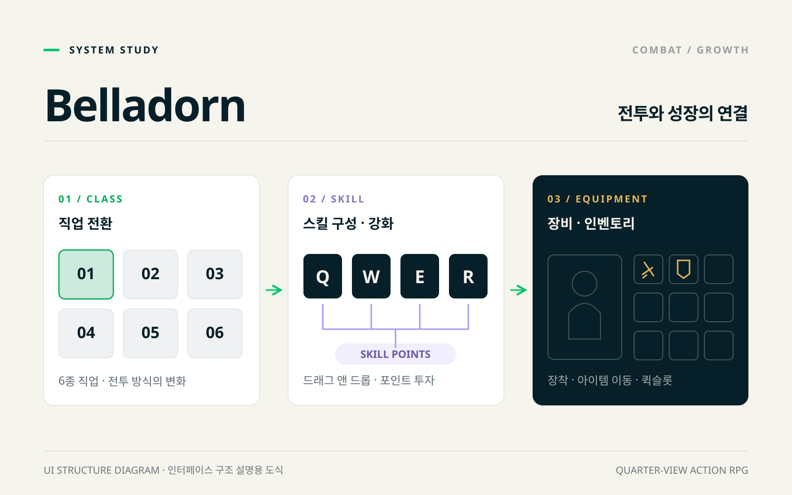
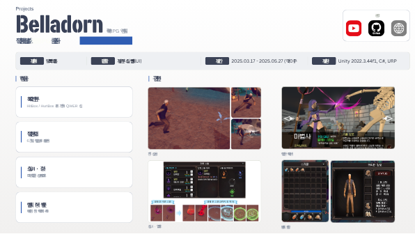

01
HitBox와 HurtBox를 분리한 전투
문제
다양한 기본 공격과 스킬에 공통 피해 처리가 필요했습니다.
구현
HitBox / HurtBox를 분리하고 기본 공격과 QWER 스킬을 구현했습니다.
결과
공격 판정과 피격 처리를 분리한 전투 구조를 구성했습니다.
SYSTEM FLOW
- 01HitBox
- 02HurtBox
- 03공통 피해 처리
- 04공격 · 스킬
PROJECT CASE STUDY
쿼터뷰 RPG 액션

THE PROJECT
직업 전환과 스킬 강화로 성장하는 액션 RPG입니다. 직업별 전투부터 인벤토리·장비·스킬 UI까지 플레이 흐름을 구현했습니다.
전투 · 스킬 · 인벤토리 · UI
구현 사례는 원본 프로젝트 포트폴리오를 기준으로 정리했습니다.
ENGINEERING NOTES
다양한 기본 공격과 스킬에 공통 피해 처리가 필요했습니다.
HitBox / HurtBox를 분리하고 기본 공격과 QWER 스킬을 구현했습니다.
공격 판정과 피격 처리를 분리한 전투 구조를 구성했습니다.
직업을 전환할 때 행동과 스킬 구성이 함께 바뀌어야 했습니다.
6종 직업의 스킬 세트와 상태이상 적용을 구현했습니다.
직업에 따라 전투 구성이 바뀌는 성장 흐름을 구성했습니다.
스킬 배치와 성장 선택을 UI로 제공해야 했습니다.
드래그 앤 드롭 스킬 슬롯과 스킬 포인트 업그레이드를 구현했습니다.
스킬 구성을 바꾸고 강화하는 사용자 흐름을 연결했습니다.
획득·장착·사용과 캐릭터 상태를 여러 UI가 공유해야 했습니다.
아이템 이동, 장착, 캐릭터 프리뷰와 퀘스트를 구현했습니다.
아이템 관리부터 장비 변경까지 RPG의 기본 UI를 구성했습니다.
TAKE A CLOSER LOOK
